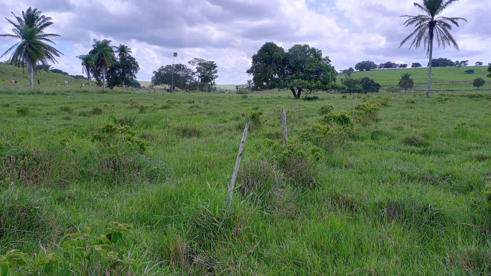
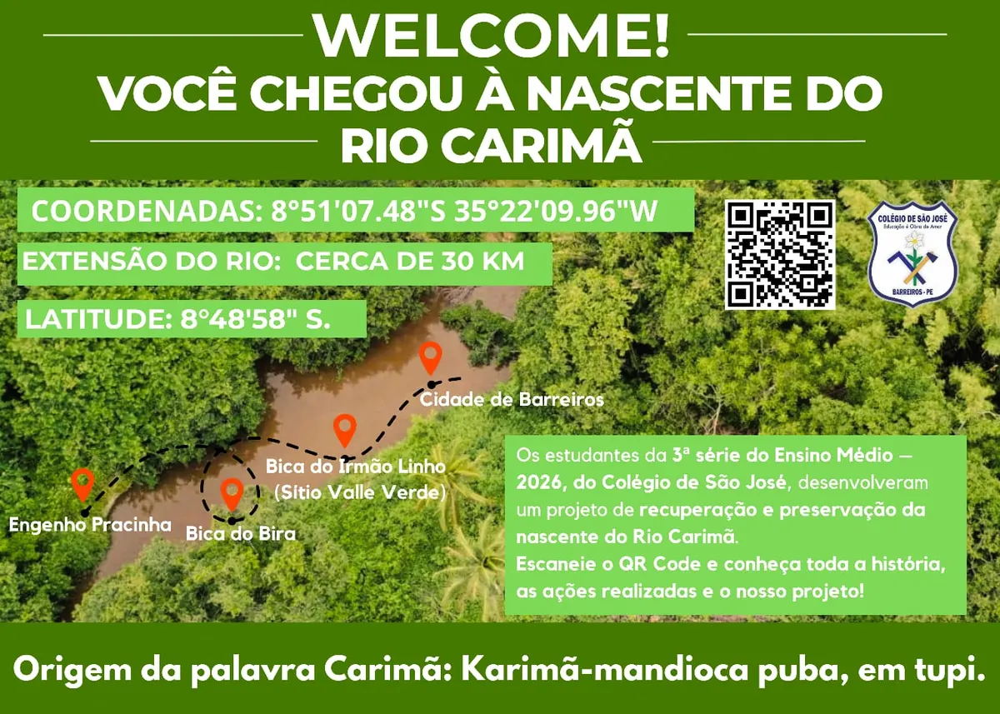
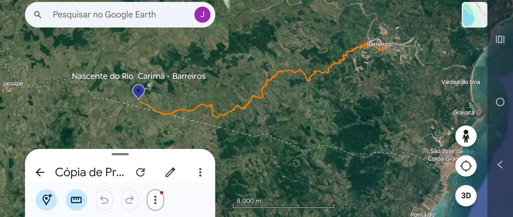
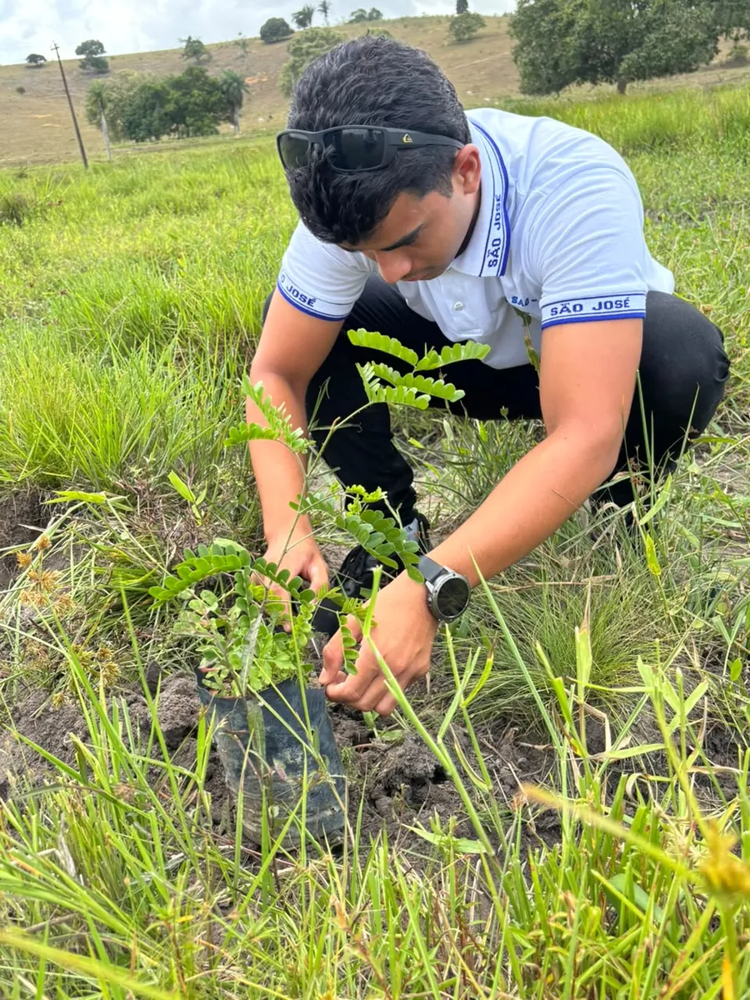
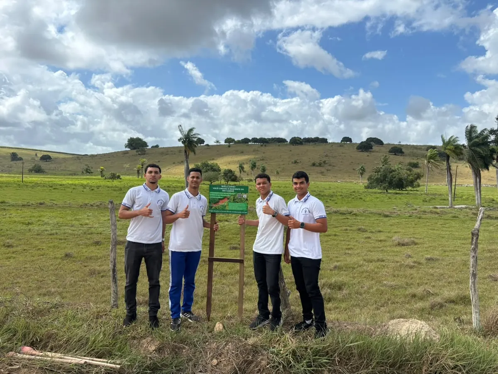
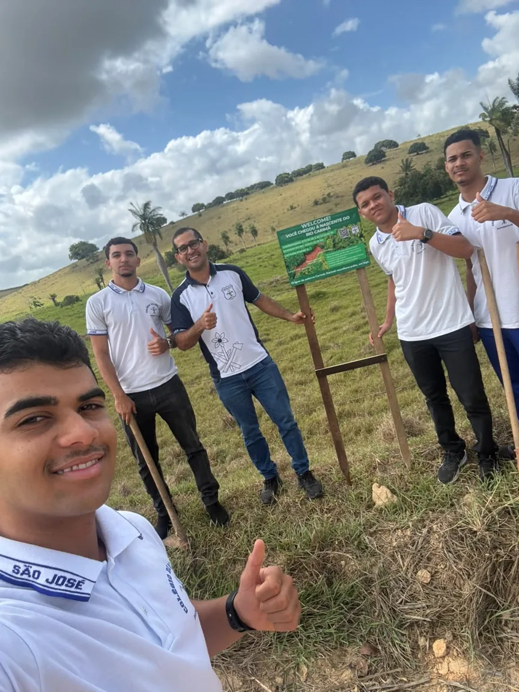
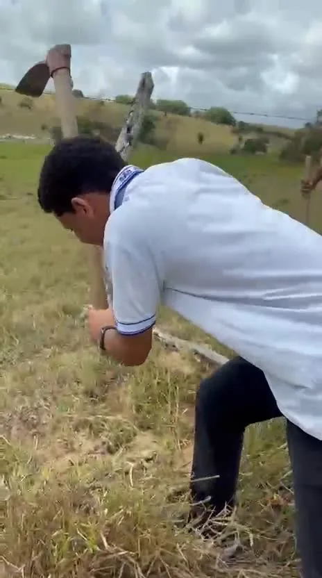

Mata ciliar
Perda da proteção do solo e da filtragem natural das águas.
Colégio de São José · Barreiros — PE
Cuidar da nascente é cuidar de todo o território. Mapeamos e reflorestamos a nascente do Rio Carimã, em Barreiros — da leitura de campo à mobilização da escola e da comunidade.
01 / O projeto
Mapear a nascente do Rio Carimã e mobilizar o reflorestamento como estratégia de preservação ambiental, social e econômica.
A área de estudo vai do centro de Barreiros até a Fazenda / Engenho Pracinha. O trajeto entre a nascente e o ponto de deságue no Rio Una é estimado em ≈ 30 km, registrado a partir de leitura de campo e visualização por imagem orbital.


02 / O problema
A falta de preservação da nascente do Rio Carimã e a ausência de mapeamento do percurso do rio levaram à busca por soluções com impactos ambientais positivos, por meio do reflorestamento das áreas afetadas.
A partir desse diagnóstico, quatro pressões aparecem de forma recorrente e se reforçam:
Perda da proteção do solo e da filtragem natural das águas.
Margens expostas perdem solo; o sedimento ocupa o leito do rio.
Lixo, esgoto e fertilizantes pressionam a qualidade da água.
A vulnerabilidade ribeirinha cresce quando a bacia perde proteção.
Nota metodológica: estimativas locais, dados históricos e bases oficiais têm escalas distintas. Distinguir essas fontes e validar medições faz parte do trabalho.
03 / Área de estudo

Ponto de partida e referência urbana.
Fazenda no percurso focal deste estudo.
Área sensível que precisa de proteção.
Conexão com a bacia hidrográfica maior.
04 / A solução
Não se trata apenas de plantar mudas: a proposta reconstrói a mata ciliar, protege o solo, acompanha a água e transforma o cuidado em aprendizado compartilhado.
Seleção alinhada à região e à função ecológica de cada espécie.
Cuidado contínuo das mudas para garantir sobrevivência e crescimento.
Vegetação restaurada para conter a erosão das margens.
Observação periódica da qualidade e do fluxo do curso d'água.

Espécies do projeto
Quatro nativas que simbolizam a recuperação da mata ciliar e da biodiversidade local.
Árvore nativa que deu origem ao nome do município de Camaçari, na Bahia.
Também chamada de copiúba ou vinagreira, é uma árvore de grande porte.
Espécie endêmica da Mata Atlântica e nativa do litoral brasileiro.
Pau-óleo de grande importância ecológica e econômica.
05 / Monitoramento
Quatro indicadores acompanham a evolução da área restaurada e o envolvimento de quem vive no território.
Sobrevivência e crescimento.
01Erosão e assoreamento.
02Qualidade em pontos estratégicos.
03Participação contínua de escolas e comunidade.
0406 / Por que importa
Preservar o Rio Carimã protege o abastecimento, a produção rural e os serviços ambientais dos quais a comunidade depende.
Após tratamento, o rio contribui para o fornecimento de água potável, sustentando saúde, bem-estar e segurança hídrica.
Água para agricultura, irrigação e atividades do campo.
Menor exposição à escassez hídrica, erosão e enchentes.
Solo protegido, regulação da água e biodiversidade funcional.
Turismo de natureza e educação ambiental no território.

07 / Sinalização
As sinalizações foram realizadas na nascente e no afluente do Rio Carimã no Rio Una. Elas orientam o caminho, educam sobre a preservação da água, da fauna e da flora, conscientizam sobre o lixo e alertam para áreas de risco.


08 / Registros de campo
Nascente, vegetação, mudas, plantio e sinalização: cliques que documentam cada etapa do trabalho.
09 / Filme do projeto
Um registro em vídeo da nascente, dos percursos e das pessoas que tornam esse projeto possível.
Ver relatório completo10 / Participação
A proteção do Rio Carimã depende de manutenção, fiscalização e participação coletiva — hoje e ao longo dos próximos anos. Dúvidas, parcerias ou interesse em participar: fale com a equipe responsável pelo projeto.